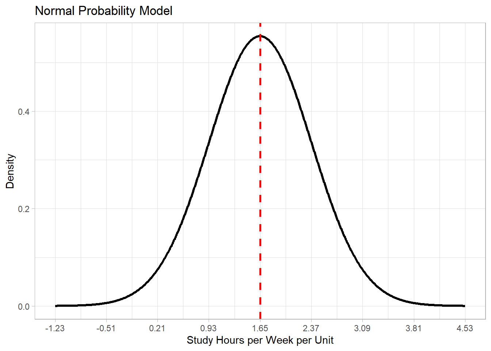

Introduction to Statistics
1 Introduction to Statistics
Statistics is broadly defined as a study of collecting and analyzing data in quantitative forms. One of goals is to make a valid statement about a large group (population) based on a small subset of the group (sample). In statistics, a population refers to a group of all individuals (e.g., persons, animals, plants, objects) that the researcher want to study. In practice, it is almost impossible to observe all individuals in the population. In statistics, a sample refers to a subset of the population, and the sample size is usually small relative to the population size.
1.1 Setting up an R Project
To set up your Quarto document (qmd), you will need to load some packages. This is necessary for each Quarto document.
- If you are using the server Cal-ICOR Hub the packages are already installed.
- If you are using your own computer, you will need to make sure these packages are installed.
install.packages(c("ggformula", "mosaic", "tidyverse"))Here are the three packages you will need to load. Note that we typically include two code chunk settings:
#| label: setupto indicate that this codes chunk has our setup information.
#| include: falsewhich loads the packages but hides the output and code from the document.
```{r}
#| label: setup
#| include: false
library(ggformula) #graphics
library(mosaic) #stats
library(tidyverse) #data cleaning
```1.2 Case Study
Let us take a look at the dataset \(\texttt{study-hours.csv}\). It is a sample of 110 students observed at a university of 7,000 students.
We can get a good overview of our data using the glimpse() function.
We can look at the first five rows of our data using the head() function.
A dataset consists of rows and columns. The above dataset has 110 rows and 5 columns. It is a sample of \(n = 110\) students in an introductory statistics course (across multiple sections) who volunteered to report the following information:
\(\texttt{units}\): number of units taking in the semester
\(\texttt{hours}\): study hours outside of classroom including reading, doing homework, studying for test, etc. (hours per week)
\(\texttt{gender}\): gender (\(\texttt{F}\) or \(\texttt{M}\))
\(\texttt{year}\): academic year (\(\texttt{Sophomore}\), \(\texttt{Junior}\), or \(\texttt{Senior}\))
1.2.1 Population of Interest
The population of interest is defined by the research question.
In statistics, that research question always about a parameter that summarizes a variable measured on the population of interest.
Example: Create two or three research questions we could answer using the study hours data.
1.2.2 Sample and Generalizablity
A sample is a subset of a population. It may or may not be representative of the population of interest. We call this the generalizability of the sample to the population of interest.
Example: For our study hours data, if the data is only selected from the College fo Science, then it cannot be generalized to the entire university, just to students in the College of Science.
One university unit is considered to be about three hours of work per week, including class time and outside of classroom. Since one hour of class time is scheduled per week per unit, students are expected to spend about two hours of work outside of classroom. One purpose of this survey was to explore if students do two hours of work outside of classroom for every unit they take in the semester. For this purpose, we need to create a new column, \(\texttt{hours\_units} = \frac{ \texttt{hours} }{ \texttt{units} }\), in the data frame named \(\texttt{study_hours}\). We can do this using the mutate() function, which allows us to create new variables.
2 Variable Types
In statistics, a variable refers to any characteristics that varies from individual to individual. In the data frame \(\texttt{study_hours}\), there are five variables, \(\texttt{units}\), \(\texttt{hours}\), \(\texttt{gender}\), \(\texttt{year}\), and \(\texttt{hours\_units}\). The first column \(\texttt{id}\) is not considered as a variable because it is just an identifier for each student.
2.1 Numeric Variables
If a variable takes numeric values, it is a numeric variable (e.g., \(\texttt{units}\), \(\texttt{hours}\), and \(\texttt{hours\_units}\)). If a variable takes non-numeric values, it is a categorical variable (e.g., \(\texttt{gender}\) and \(\texttt{year}\)). These two main variable types can be categorized into the following subtypes:
Definition: If a numeric variable takes countable numeric values , it is a discrete numeric variable
Definition: If a numeric variable takes on all possible values it is a continuous numeric variable. If numeric values are rounded for practical convenience, we may treat it as a continuous numeric variable.
For instance, most students reported \(\texttt{hours}\) (study hours per week) in rounded numbers because they do not keep track every minute and second, so it may be treated as continuous rather than discrete.
2.2 Categorial Variables
Values of a categorical variable are called levels.
Definition: If the levels of a categorical variable can be ordered in a meaningful manner, it is an ordinal categorical variable.
Definition: If levels are unordered it is called a nominal categorical variable.
The \(\texttt{glimpse}\) function helps checking the variable type of each column. It identifies columns of integers (\(\texttt{int}\)), of real numbers (\(\texttt{dbl}\)), and of characters (\(\texttt{chr}\)).
R defaults to dbl or type double for numeric values.
glimpse(study_hours)Rows: 110
Columns: 5
$ id <dbl> 1, 2, 3, 4, 5, 6, 7, 8, 9, 10, 11, 12, 13, 14, 15, 16, 17, 18, …
$ units <dbl> 12, 16, 12, 12, 21, 15, 15, 12, 16, 14, 23, 13, 16, 16, 16, 18,…
$ hours <dbl> 25, 37, 7, 7, 19, 10, 35, 9, 30, 20, 20, 30, 30, 25, 25, 40, 45…
$ gender <chr> "F", "F", "M", "F", "F", "F", "F", "M", "F", "M", "M", "M", "F"…
$ year <chr> "Senior", "Junior", "Senior", "Sophomore", "Sophomore", "Senior…R does not know if a categorical variable is nominal or ordinal. By default, R remembers levels of a categorical variable by the alphabetical order: \(\texttt{Junior}\), \(\texttt{Senior}\), and \(\texttt{Sophomore}\).
In our context, the three levels of \(\texttt{year}\) can be ordered as follows: \(\texttt{Sophomore}\), \(\texttt{Junior}\), and \(\texttt{Senior}\). The ordinal levels can be ordered as follows using the mutate() function again:
3 Summarizing Data by Variable Type
In statistics, a statistic is defined as a numeric summary of data. This definition is broad. For instance, if data consists of three values \((1, 0, 2)\), we can calculate the sum \(1 + 0 + 2 = 3\), the mean \(\frac{1}{3}(1+0+2) = 1\), and the product \(1 \times 0 \times 2 = 0\). According to the definition, the sum (3), the mean (1), and the product (0) are statistics. Some statistics are useful, and some are not. A good statistic is informative, concise, and interpretable in the context. When a statistics summarizes and describes data in an informative, concise, and interpretable manner, it is called a descriptive statistic.
3.1 Descriptive Statistics for Categorical Variable
For a categorical variable, the sample count of each level is a descriptive statistics.
Among the \(n = 110\) students in the sample, 17 students are sophomore, 39 students are junior, and 54 students are senior.
By dividing each count by the sample size \(n = 110\), we can calculate the sample proportion of each level.
It is just like a probability model. Given a sample space of \(\Omega = \{ \texttt{Sophomore}, \texttt{Junior}, \texttt{Senior} \}\),
\[ P(\texttt{Sophomore}) = 0.1545 \, , \,\,\, P(\texttt{Junior}) = 0.3545 \, , \,\,\, P(\texttt{Senior}) = 0.4909 \, . \]
The sample proportions are also called observed probabilities or empirical probabilities.
By multiplying each sample proportion (observed probability) by 100, we can calculate the sample percent.
Among the \(n = 110\) students in the sample, 15.5%, 35.5%, and 49.1% are sophomore, junior, and senior, respectively. The word “percent” literally means “per hundred.” In other words, in a hypothetical group of one hundred students, we expect about 15.5 students, 35 students, and 49.1 students are sophomore, junior, and senior.
3.2 Descriptive Statistics for Numeric Variable
For a numeric variable, the following descriptive statistics are known as the 5-number summary.
Sample minimum: the value \(\texttt{min}\) such that it is smaller than all other values in a sample
Sample maximum: the value \(\texttt{max}\) such that it is greater than all other values in a sample
Sample median: the value \(M\) such that about 50% of values are \(M\) or below in a sample
Sample first quartile: the value \(Q_1\) such that about 25% of values are \(Q_1\) or below in a sample
Sample third quartile: the value \(Q_3\) such that about 75% of values are \(Q_3\) or below in a sample
Let \((X_1, X_2, \dots, X_n)\) be a sample of size \(n\) for a numeric variable, and let \((X_{(1)}, X_{(2)}, \dots, X_{(n)})\) be an ordered sample such that \(X_{(1)} \le X_{(2)} \le \dots \le X_{(n)}\). The sample minimum is formally defined as
\[ \texttt{min} = X_{(1)} \, . \]
The sample maximum is formally defined as
\[ \texttt{max} = X_{(n)} \, . \]
Let \(m = \frac{n+1}{2}\). The sample median is formally defined as
\[ \begin{aligned} M & = X_{(m)} \, , \,\,\, \mathrm{when} \,\, n \,\, \mathrm{is} \,\, \mathrm{odd} \, , \\ M & = \frac{1}{2} \left( X_{(m-0.5)} + X_{(m+0.5)} \right) \, , \,\,\, \mathrm{when} \,\, n \,\, \mathrm{is} \,\, \mathrm{even} \, . \end{aligned} \]
The formal definitions of \(Q_1\) and \(Q_3\) are technical, and we let R calculate it. The below R code calculates the 5-number summary (\(\texttt{min}\), \(Q_1\), \(M\), \(Q_3\), and \(\texttt{max}\)).
We interpret the above descriptive statistics as follows.
In the sample of \(n = 110\) students, all students reported that they study between _____ and _____ hours per week per unit which is a wide range.
About 50% of the students reported that they study _____ hours per week per unit or less.
About 25% of the students below _____ hours per week per units or less, and about 25% of the students above _____ hours per week per units.
These statistics inform that a majority of students in the College of Science spend less than two hours per week per units, and slightly more than 25% of students spend sufficient time to earn one unit.
There are some other statistics calculated from the 5-number summary. The distance between \(Q_1\) and \(Q_3\) is defined as the interquartile range (or IQR), so
\[ \texttt{IQR} = Q_3 - Q_1 = 2.08 - 1.12 = 0.96 \, . \tag{1}\]
The distance between the sample minimum and sample maximum is defined as the range, so
\[ \texttt{range} = \texttt{max} - \texttt{min} = 4.58 - 0.45 = 4.13 \, . \tag{2}\]
Both IQR and range quantify the spread of data values.
3.3 Descriptive Statistics Under Normality Assumption
Let \((X_1, X_2, \dots, X_n)\) be a sample of size \(n\) for a numeric variable. Assume that the sample is observed from a normal distribution. This assumption refers to the normality assumption, and two statistics are sufficient in this case. The sample mean is defined as
\[ \bar{X} = \frac{1}{n} \sum_{i=1}^n X_i = \frac{X_1 + X_2 + \dots + X_n}{n} \, , \]
and the sample standard deviation (or sample SD) is defined as
\[ S = \sqrt{ \frac{1}{n-1} \sum_{i=1}^n (X_i - \bar{X})^2 } = \sqrt{ \frac{(X_1 - \bar{X})^2 + (X_2 - \bar{X})^2 + \dots + (X_n - \bar{X})^2 }{n-1} } \, . \tag{3}\]
The below R code calculates \(\bar{X}\) and \(S\).
We interpret that, on average, students spend 1.65 hours per week per unit (a standard deviation of 0.72), but it is not easy to understand in the context.
Assuming the population distribution of \(\texttt{hours\_units}\) follows a normal distribution, we can model \(\texttt{hours\_units} \sim \mathrm{N}(\mu, \sigma)\) by estimating \(\mu\) by \(\bar{X} = 1.65\) and estimating \(\sigma\) by \(s = 0.72\).

For any normal distribution \(X \sim \mathrm{N}(\mu, \sigma)\) the following probability statements are true:
\[ \begin{aligned} P( \mu - 1\sigma \le X \le \mu + 1\sigma ) & = 0.683 \, , \\ P( \mu - 2\sigma \le X \le \mu + 2\sigma ) & = 0.954 \, , \\ P( \mu - 3\sigma \le X \le \mu + 3\sigma ) & = 0.997 \, . \end{aligned} \]
It is known as the empirical rule under normality assumption. Assuming \(\texttt{hours\_units} \sim \mathrm{N}(\mu, \sigma)\), where \(\mu\) and \(\sigma\) are estimated by \(\bar{X} = 1.65\) and \(s = 0.72\), respectively, we can have the following interpretations according to the empirical rule.
About 68.3% of students in the population study _____ and _____ hours per week per unit).
About 95.4% study _____ and _____ hours per week per unit.
The above estimates are reliable only when a normal distribution is as a good approximation for the population distribution.
3.4 Central Tendency vs. Spread of Data
Some descriptive statistics quantify the center (central tendency) of data.
Sample median (\(M\)): One half of data value are \(M\) or below, and the remaining half of data values are above \(M\).
Sample mean (\(\bar{X}\)): If we choose a point such that each data value is not too far from the point, \(\bar{X}\) is a good choice.
Some descriptive statistics quantify the spread of data.
Range: It is defined in Equation 2. All data values in the sample are in \([\texttt{min}, \texttt{max}]\). It is possible that some data values in the population are not in \([\texttt{min}, \texttt{max}]\).
IQR: It is defined in Equation 1. Approximately 50% of data values in the sample are in \([Q_1, Q_3]\). We estimate that 50% of data values in the population are in \([Q_1, Q_3]\). This estimation becomes more accurate as the sample size \(n\) increases.
Sample standard deviation: \(S\) is defined in Equation 3. It is one way of quantifying the spread of data values around the sample mean \(\bar{X}\). Under the normality assumption, we estimate that 68.3% of data values in the population are in \([\bar{X} - S, \bar{X} + S]\), 95.4% are in \([\bar{X} - 2S, \bar{X} + 2S]\), and 99.7% are in \([\bar{X} - 3S, \bar{X} + 3S]\) according to the empirical rule under normality assumption. These estimations become more accurate as the sample size \(n\) increases, and the normality assumption must be satisfied.
3.5 Sensitivity vs. Robustness to Outliers
The center and spread are important characteristics of a sample. Both sample mean (\(\bar{X}\)) and sample median (\(M\)) measure the center of a sample \((X_1, X_2, \dots, X_n)\), but they have different characteristics. The sample mean (\(\bar{X}\)) is value-based which means all values of \(X_1, X_2, \dots, X_n\) are averaged to calculate \(\bar{X}\). On the other hand, the sample mean (\(M\)) is rank-based which means that the calculation of \(M\) depends on the order \(X_{(1)} \le X_{(2)} \le \dots \le X_{(n)}\).
For the purpose of demonstration, suppose we recorded the gas price (dollars per gallon) of \(n = 10\) randomly sampled gas stations in a town.
Suppose the most expensive place increased the gas price by $1.00 per gallon (from $5.99 per gallon to $6.99 per gallon).
The sample mean increased by $0.1 per gallon (from \(\bar{X} = 5.165\) to \(\bar{X} = 5.265\)), but the sample median stayed constant at \(M = 5.07\). In this case, we say that the sample mean is sensitive to outlier(s), and we say that the sample median is robust to outlier(s).
4 Wrap-up
In your groups work on the following problems. You can check your answers below. All calculations (numeric answers) must be rounded to four decimals (e.g., 0.6667 instead of 2/3, 0.5 or 0.5000 instead of 1/2) unless specified. Be ready to show your work on the board.
4.0.1 Problem 1
Given a sample of (8, 3, 1, 5, 8, 2, 3, 9, 5, 4), calculate the following statistics.
- sample size
TipAnswer
10
- sample minimum
TipAnswer
1
- sample maximum
TipAnswer
9
- sample range
TipAnswer
8
- sample mean
TipAnswer
4.8
- sample standard deviation
TipAnswer
2.7406
- sample median
TipAnswer
4.5
4.0.2 Problem 2
Given a sample of (8, 3, 1, 5, 8, 2, 3, 9, 54), where 54 is an outlier (a data value which is extremely distant from other data values), calculate the following statistics.
- sample size
TipAnswer
9
- sample minimum
TipAnswer
1
- sample maximum
TipAnswer
54
- sample range
TipAnswer
53
- sample mean
TipAnswer
10.3333
- sample standard deviation
TipAnswer
16.6283
- sample median
TipAnswer
5
4.0.3 Problem 3
True or false?
- The sample mean is sensitive to an outlier.
- The sample median is sensitive to an outlier.
- The sample IQR is sensitive to an outlier.
- The sample range is sensitive to an outlier.
- The sample standard deviation is sensitive to an outlier.
4.0.4 Problem 4
Multiple-choice: Suppose we will add one data value to a sample of size \(n\). Which of the following makes the sample mean less sensitive?
4.0.5 Problem 5
In the dataset of study-hours.csv, let us focus on the categorical variable of \(\texttt{gender}\) where \(\texttt{F}\) denotes a female student and \(\texttt{M}\) denotes a male student.
study_hours <- read_csv("study-hours.csv", show_col_types = FALSE)
study_hours <- read_csv("study-hours.csv", show_col_types = FALSE)Calculate the following statistics.
- sample size
# glimpse ----
glimpse(study_hours)
# glimpse ----
glimpse(study_hours)- sample count of female students
tally(~gender, data = study_hours)
tally(~gender, data = study_hours)- sample proportion of female students
tally(~gender, data = study_hours, format = "proportion")
tally(~gender, data = study_hours, format = "proportion")- sample proportion of male students
tally(~gender, data = study_hours, format = "proportion")
tally(~gender, data = study_hours, format = "proportion")- sample percent of male students
tally(~gender, data = study_hours, format = "percent")
tally(~gender, data = study_hours, format = "percent")5 Assignment
Check your answer by inputting them below their respective question. All calculations (numeric answers) must be rounded to four decimals (e.g., 0.6667 instead of 2/3, 0.5 or 0.5000 instead of 1/2) unless specified.
Though you are checking the numeric answers here, you should make sure your written work is complete and your mathematical notation is correct as both will be graded on the homework quiz.
5.0.1 Problem 1
The dataset king.csv is a random sample of 2,500 mothers (and their newborn babies) who gave a birth in 2001 in King County, Washington.
Below are descriptions of the variables.
\(\texttt{bwt}\): birth weight (rounded in grams)
\(\texttt{low}\): low birth weight (\(< 2500\) grams) (\(\texttt{N}\) or \(\texttt{Y}\))
\(\texttt{firstep}\): participation in an education program during pregnancy (\(\texttt{N}\) or \(\texttt{Y}\))
\(\texttt{gender}\): baby’s gender (\(\texttt{F}\) or \(\texttt{M}\))
\(\texttt{age}\): mother’s age in years at birth (rounded in years)
\(\texttt{race}\): mother’s race (\(\texttt{Asian}\), \(\texttt{Black}\), \(\texttt{Hispanic}\), \(\texttt{Other}\) or \(\texttt{White}\))
\(\texttt{parity}\): number of previous births after 20 weeks of pregnancy
\(\texttt{smoker}\): mother’s smoking habit during pregnancy (\(\texttt{N}\) or \(\texttt{Y}\))
\(\texttt{drinker}\): mother’s drinking habit during pregnancy (\(\texttt{N}\) or \(\texttt{Y}\))
\(\texttt{wpre}\): mother’s weight prior to pregnancy (rounded in pounds)
\(\texttt{wgain}\): mother’s weight gained during pregnancy (rounded in pounds)
\(\texttt{educyr}\): mother’s education (rounded in years)
\(\texttt{gest}\): estimated gestational age (rounded in weeks)
Identify the variable type of each variable below. (Choices: numeric discrete variable, numeric continuous variable, categorical ordinal variable, and categorical nominal variable)
- \(\texttt{bwt}\)
TipAnswer
numeric continuous variable
- \(\texttt{low}\)
TipAnswer
categorical nominal variable
- \(\texttt{firstep}\)
TipAnswer
categorical nominal variable
- \(\texttt{gender}\)
TipAnswer
categorical nominal variable
- \(\texttt{age}\)
TipAnswer
numeric continuous variable
- \(\texttt{race}\)
TipAnswer
categorical nominal variable
- \(\texttt{parity}\)
TipAnswer
numeric discrete variable
- \(\texttt{wpre}\)
TipAnswer
numeric continuous variable
- \(\texttt{wgain}\)
TipAnswer
numeric continuous variable
- \(\texttt{educyr}\)
TipAnswer
numeric continuous variable
- \(\texttt{gest}\)
TipAnswer
numeric continuous variable
5.0.2 Problem 2
Let \((7, 8, 9, 8, 8)\) be quiz scores of Student A. Each quiz is out of 7, and the passing score is 7 for each quiz. Calculate the following statistics.
- sample mean
TipAnswer
8
- sample standard deviation
TipAnswer
0.7071
- sample median
TipAnswer
8
- sample range
TipAnswer
2
- proportion of quizzes passed
TipAnswer
1
5.0.3 Problem 3
Let \((9, 10, 10, 1, 10)\) be quiz scores of Student B who took the same quizzes as Student A in the same class. Calculate the following statistics.
- sample mean
TipAnswer
8
- sample standard deviation
TipAnswer
3.937
- sample median
TipAnswer
10
- sample range
TipAnswer
9
- proportion of quizzes passed
TipAnswer
0.80
5.0.4 Problem 4
Fill in the blank in the context of Problems 2 and 3. (Choices: sample mean, sample standard deviation, sample median, sample range, proportion of quizzes passed)
- The two students performed the same according to the […].
TipAnswer
sample mean
- Student B received a perfect score of 10 at least 50% of the time according to the […].
TipAnswer
sample median
- Student B’s performance deviates more from the average score than Student A’s according to the […].
TipAnswer
sample standard deviation
- The […] of Student B is substantially longer than of Student A because it is a sensitive statistic to an outlier.
TipAnswer
sample range
5.0.5 Problem 5
Revisit king.csv. The sample represents all pregnant women in 2001 in King County, Washington. Answer the following question by calculating appropriate statistics.
king <- read_csv("king.csv", show_col_types = FALSE)
king <- read_csv("king.csv", show_col_types = FALSE)- Estimate the probability of giving a birth to a boy when a woman is
tally(~gender, data = king, format = "proportion")
tally(~gender, data = king, format = "proportion")
TipAnswer
0.5164
- Estimate the percent of smokers among pregnant woman.
tally(~smoker, data = king, format = "percent")
tally(~smoker, data = king, format = "percent")
TipAnswer
7%
- Estimate the percent of drinkers among pregnant woman.
tally(~drinker, data = king, format = "percent")
tally(~drinker, data = king, format = "percent")
TipAnswer
1.16%
- Estimate the average birth weight in grams.
mean(~bwt, data = king)
mean(~bwt, data = king)
TipAnswer
3414.019g
- Estimate the middle birth weight that 50% of babies will be heavier than that birth weight
median(~bwt, data = king)
median(~bwt, data = king)
TipAnswer
3444.5g
- Estimate the probability of a low birth weight (\(< 2500\) grams).
tally(~low, data = king, format = "proportion")
tally(~low, data = king, format = "proportion")
TipAnswer
0.0508
- Estimate the age in years that 25% of pregnant women will be younger than that age
quantile(~age, data = king)
quantile(~age, data = king)
TipAnswer
25 years
- Estimate the age in years that 25% of pregnant women will be older than that age
quantile(~age, data = king)
quantile(~age, data = king)
TipAnswer
34 years
5.0.6 Problem 6
For a categorical variable, suppose your goal is to report the minimum amount of information without losing any information. Is it sufficient to calculate the sample count for each level? Explain why or why not.
TipAnswer
Yes, it is sufficient to calculate the sample count for each level for the following reason. There are three common ways to report statistics for a categorical variable: (1) sample counts, (2) sample proportions, and (3) sample percents. Suppose there are \(g\) levels for a categorical variables, and let \(n_1, n_2, \dots, n_g\) be the sample counts for each level (i.e., the number of individuals belonging to each level). From these statistics (sample counts), we can calculate the total sample size, \(n = n_1 + n_2 + \dots + n_g\), and calculate the sample proportions as follows: \(p_i = \frac{n_i}{n}\) for \(i = 1, 2, \dots, g\). Then, we can calculate the sample percents as follows: \(p_i \times 100\%\) for \(i = 1, 2, \dots, g\). Therefore, the sample counts \(n_1, n_2, \dots, n_h\) are minimally sufficient statistics without losing any information about the categorical variable of interest.
5.0.7 Problem 7
For a numeric variable, can we argue which statistics, sample mean or sample median, is better to measure the center of a sample? If so, choose the better one and explain. Otherwise, explain why not. In addition, explain why it is not sufficient to describe a sample based on central tendency only.
TipAnswer
One statistic (sample mean or sample median) is not better than the other to represent the center of a sample. The sample mean is sensitive to outlier(s), and the sample median is robust to outlier(s), and these are just properties (neither good or bad). Suppose you earned grade points of (2, 2, 2, 2, 4) in five courses (i.e., 4 C’s and 1 A). The median grade point would be 2, and the mean (average) grade point is 2.4 which reflects the one great performance!
In addition, the median or mean does not describe the dispersion of values in a sample. Suppose Student A scored (8, 8, 8, 8, 8) and Student B scored (6, 10, 7, 9, 8) in five quizzes. Their sample medians and means are both 8, but the central tendency does not inform about the variability. The sample standard deviation of Student A’s score is 0 (which means the scores are constant), and of Student B’s score is 1.58 (which means the scores vary around the average by some degree).
Therefore, a good practice is to report sample mean and standard deviation (which are sensitive to outliers) and Q1, median, and Q3 (which are robust to outliers) to describe a sample. One practical recommendation is to use the df_stats() function in R!